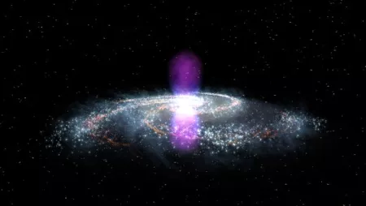

Introduction to Astronomy
Astronomy (from Greek: ἀστρονομία, literally meaning the science that studies the laws of the stars) is a natural science that studies celestial objects and phenomena. It uses mathematics, physics, and chemistry in order to explain their origin and evolution. Objects of interest include planets, moons, stars, nebulae, galaxies, and comets. Relevant phenomena include supernova explosions, gamma ray bursts, quasars, blazars, pulsars, and cosmic microwave background radiation. More generally, astronomy studies everything that originates beyond Earth's atmosphere. Cosmology is a branch of astronomy that studies the universe as a whole. Astronomy is one of the oldest natural sciences. The early civilizations in recorded history made methodical observations of the night sky.
Stargazing Guide
Stargazing is a calming and fun activity to most, but how do you do it? Go into your garden, and look up at the night sky. That’s how easy it starts. You might be wondering, what now? If you want to know what you are looking at, you can use multiple tools to learn. Remembering what is where, will give a sense of satisfaction. There are apps that use Augmented Reality to show you what is there, maps for the sky called planispheres and light pollution maps, magazines talking about what is where and when and star atlasses. Though you can start stargazing in your backyard, the best possible location is in a dark area, with no light pollution. Find the best locations here.
Vacuum decay: the ultimate catastrophe
Every once in a while, physicists come up with a new way to destroy the Universe. There’s the Big Rip (a rending of spacetime), the Heat Death (expansion to a cold and empty Universe), and the Big Crunch (the reversal of cosmic expansion)Like an electric field, the Higgs field varies in strength, based on its potential. Think of the potential as a track on which a ball is rolling. The higher it is on the track, the more energy the ball has. The Higgs potential determines whether the Universe is in one of two states: a true vacuum, or a false vacuum. A true vacuum is the stable, lowest-energy state, like sitting still on a valley floor. A false vacuum is like being nestled in a divot in the valley wall – a little push could easily send you tumbling. A universe in a false vacuum state is called...
Astronomical engineering
Engineering on an astronomical scale, or astronomical engineering, i.e., engineering involving operations with whole astronomical objects (planets, stars, etc.), is a known theme in science fiction, as well as a matter of recent scientific research and exploratory engineering. In the Kardashev scale, Type II and Type III civilizations can harness energy on the required scale. This can allow them to construct megastructures.
Exploratory engineering
Exploratory engineering is a term coined by K. Eric Drexler to describe the process of designing and analyzing detailed hypothetical models of systems that are not feasible with current technologies or methods, but do seem to be clearly within the bounds of what science considers to be possible within the narrowly defined scope of operation of the hypothetical system model. It usually results in paper or video prototypes, or (more likely nowadays) computer simulations that are as convincing as possible to those that know the relevant science, given the lack of experimental confirmation. By analogy with protoscience, it might be considered a form of protoengineering.
Terraforming
Terraforming or terraformation (literally, "Earth-shaping") is the hypothetical process of deliberately modifying the atmosphere, temperature, surface topography or ecology of a planet, moon, or other body to be similar to the environment of Earth to make it habitable by Earth-like life. The concept of terraforming developed from both science fiction and actual science. Carl Sagan, an astronomer, proposed the planetary engineering of Venus in 1961, which is considered one of the first accounts of the concept. The term was coined by Jack Williamson in a science-fiction short story ("Collision Orbit") published in 1942 in Astounding Science Fiction, although terraforming in popular culture may predate this work.
Closest Stars
| Star | Distance (ly) | Stellar Class | Mass (M☉) |
| Sun | 0.0000158 | G2V | 1 |
| Proxima Centauri | 4.2441±0.0011 | M5.5Ve | 0.122 |
| α Centauri A (Rigil Kentaurus) | 4.3650±0.0068 | G2V | 1.100 |
| α Centauri B (Toliman) | K1V | 0.907 |